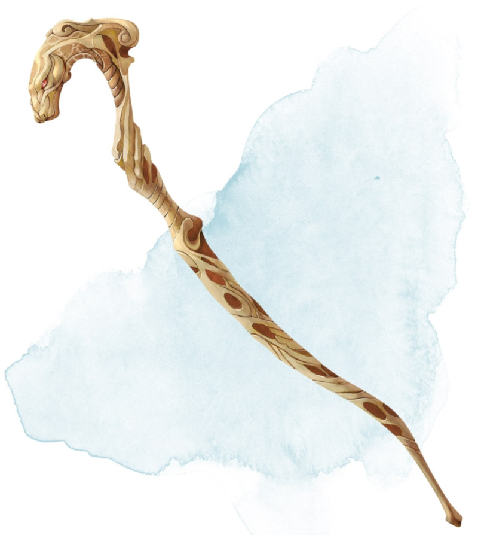

Bâton du python
Bâton, peu commun (nécessite un lien par un clerc, un druide ou un occultiste)
Vous pouvez utiliser une action pour prononcer le mot de commande du bâton et le lancer au sol dans un rayon de 3 mètres autour de vous. Le bâton devient un serpent constricteur géant (voir le Manuel des Monstres pour les statistiques) sous votre contrôle et qui agit selon son propre score d'initiative. En utilisant une action bonus pour prononcer de nouveau le mot de commande, le bâton reprend sa forme originale dans l'espace qu'occupait le serpent.
À votre tour, vous pouvez mentalement commander le serpent tant qu'il se trouve à 18 mètres ou moins de vous et que vous n'êtes pas incapable d'agir. Vous décidez quelles actions entreprendra le serpent et où il se déplacera lors du prochain tour, ou vous pouvez lui donner un ordre général comme attaquer vos ennemis ou garder un lieu.
Si le serpent tombe à 0 point de vie, il meurt et reprend la forme du bâton, puis celui-ci se brise et le bâton est détruit. Si le serpent reprend la forme du bâton avant de perdre tous ses points de vie, il les récupère tous.
À votre tour, vous pouvez mentalement commander le serpent tant qu'il se trouve à 18 mètres ou moins de vous et que vous n'êtes pas incapable d'agir. Vous décidez quelles actions entreprendra le serpent et où il se déplacera lors du prochain tour, ou vous pouvez lui donner un ordre général comme attaquer vos ennemis ou garder un lieu.
Si le serpent tombe à 0 point de vie, il meurt et reprend la forme du bâton, puis celui-ci se brise et le bâton est détruit. Si le serpent reprend la forme du bâton avant de perdre tous ses points de vie, il les récupère tous.
Dungeon Master´s Guide (SRD)
